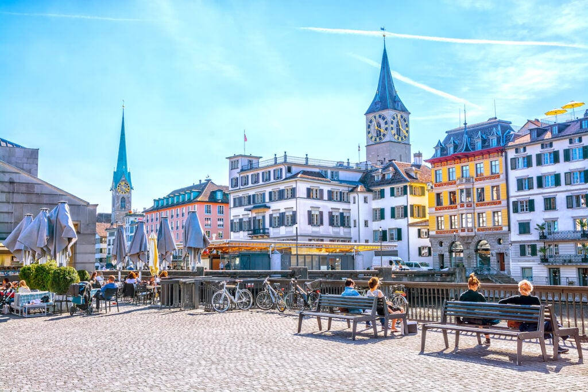

Welcome to My Website!
Introduction
Hi, I'm Blerian Morina, a student who loves travelling around the world.Last time I travelled was last month.I was in Germany at my brother.So let me show you my favourite places!
Favorite Travelling Destination
1. Zurich, Switzer land

Zurich is the largest city in Switzerland and serves as the country's economic and cultural hub. Nestled at the northern end of Lake Zurich and surrounded by the picturesque Swiss Alps, Zurich offers a stunning blend of natural beauty and urban sophistication.
Highlights
- Old Town
- Lake Zurich
- Zurich Zoo
- Swiss National Musem
- Kunsthaus Zurich
2. Santorini, Greece

Located in the Aegean Sea, Santorini is a breathtaking island renowned for its picturesque landscapes and charming architecture. The island is famous for its iconic white-washed buildings with blue domes, set against the backdrop of the deep blue sea and stunning cliffs.
Highlights
- Oia
- Fira
- Kamari Beach
- Red Beach
- Imerovigli
Travel Tips
- Plan and Research: Before your trip, take the time to plan and research your destination.
- Pack Wisely: Pack smartly by considering the weather, activities, and duration of your trip.
- Stay Connected and Secure: Ensure you have access to communication and important information during your trip.
- Respect Local Customs and Etiquette: When traveling to a new destination.
- Stay Open-Minded and Flexible: Embrace the unexpected and keep an open mind during your travels.
Travel Recources
Here are some of best travel recources:
- Guidebooks - Guidebooks are valuable companions for travelers
- Books - Traveling books are passports to the world
- Apps - Traveling apps are digital companions that enhance the travel experience
- Forums Traveling forums are online communities where passionate travelers come together to share knowledge.
Contact Me
If you have any questions or want to share your own travel experience, feel free to email me
Happy travels!